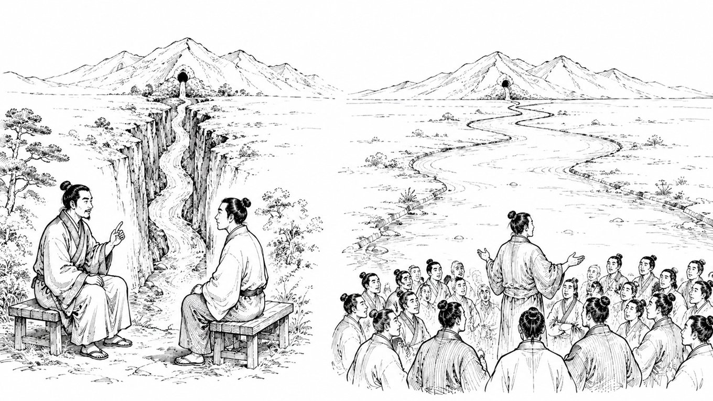

行動経済学 × SNSビジネスの視点で、売れる「考え方の型」を綴ります。
とーるです！前回は、「頑張ってるのに結果が出ない努力＝素振り」だという話をしました。まだ見てないぜ、という方は是非こちらから読んでみてください‼ ↓↓ #22：「失敗は成功を生む」という大誤解 あれは
とーるです。今回は“起業”問わず 『失敗とは？』に関してお話していこうと思います。結構長くなりそうなので、何回にわけていこうとも思っています。
もし、 働かなくても毎月20万円 入ってきたら嬉しいですか？…まぁ、誰だって「はい！」って言いますよね。実際に、こういう甘い言葉に引っかかってしまう人は少なくないです。
今日は多くの初心者SNS起業家さんが直面している“ある誤解”についてお話ししたいと思います。きっとあなたも「心当たりあるかも…」と思うはずです。
最近のSNSを見ていると、こんな光景が当たり前のように広がっています。「1ヶ月で月収7桁！」 「フォロワーゼロから自動化で売れ続ける仕組み完成！」 「好きなことで自由に起業！
今回は「リールバズらせる必要性はあるのか？」というテーマを切り口に、もっと大事なことをお伝えしていきます。僕は正直これまで「リールをバズらせる」ことに価値をあまり感じていませんでした。
今回は「集客の入口は最低2つ用意する」というテーマでお話しします。SNSで発信している人なら、誰もが一度は 「集客の仕組みってどう作ればいいの？」 と悩んだことがあるはずです。

今回は「Act回」です。ちょいちょい内容の際は、この Act（行動） というタイトルで発信をしていきたいと思います。早速ですが 「自分なんてまだまだ…」 と感じていませんか？
最近「コンサルやってます！」っていう人が増えてきましたよね。でも、その中には正直「え？それってただの○○屋さんじゃないの？」と思うこともあります。
前回は「やる気は行動のあとにやってくる」という話をしました。今回は、じゃあその「最初の1歩」ってどうやって動けばいいの？
さてさてさーーーて 今回は「継続できる売上と、燃え尽きる売上の違い」についてお話します。同じ売上高でも、実はメンタルとモチベーションへの影響が全然違う って、知ってましたか？
“売れた”は勝ちじゃない。継続こそが本物です どーも、とーるです。今日はね、ちょっとドキッとするテーマから話そうと思っていて…… あ、ちなみに今回のお話の続きは・・・